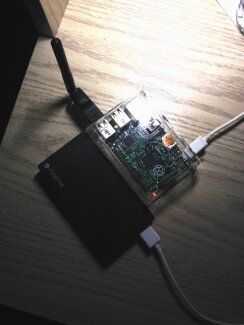
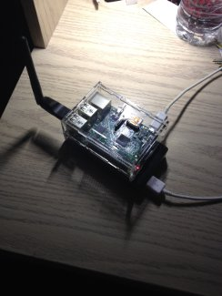
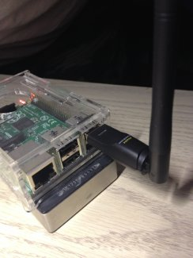

How stony.box Works
  {kind=link}
{kind=link}
{kind=link}
At its core, stony.box is a Raspberry Pi B+ with a WiFi adapter plugged in, hooked up to a battery. Using a special Linux distribution known as PirateBox, stony.box forms a local WiFi network, disconnected from the Internet purposefully to prevent tracking, and to preserve user privacy. PirateBox is designed to be safe and secure. No logins are required, and no user data is logged.
The Raspberry Pi is a single-board computer that runs its operating system off of a microSD card. It is extremely portable, and it sips just three watts of power on its own. Additionally connected is a Panda Wireless PAUD-4 802.11b/g/n WiFi adapter which at full power- that is, maximum bandwidth up and down, maximum users connected- uses another three watts of power. Six watts of power plugged into a 12,000 mAh battery, drawing 5V equates to a bare minimum of 10 hours of battery power for this server, up to 20 hours depending on usage.
stony.box is being run by an anonymous Stony Brook University student as an experiment into the world of local networking and technology. They hope that the network will be useful for local anonymous communication and file-sharing.